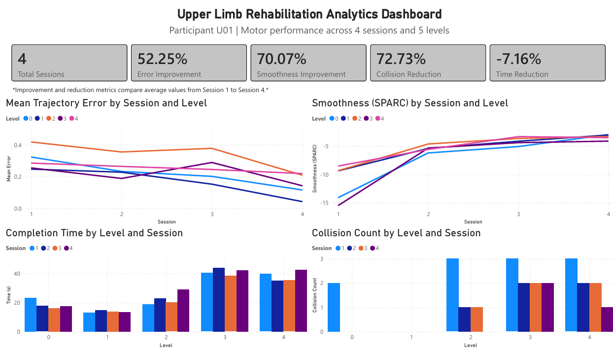

Project Description
I developed and validated a Unity-based serious game for upper-limb rehabilitation, integrating the ArmMotus M2 Pro robotic system, EMG acquisition, and data analysis tools. The system allows users to perform trajectory-following tasks while movement performance and muscle activity are recorded and analyzed.
The project was evaluated with 10 users through a structured testing protocol. Gameplay metrics, movement data, and EMG signals were collected to assess movement accuracy, stability, task performance, and muscle activation.
Problem
Upper-limb rehabilitation often requires repetitive exercises, but patient performance is not always quantified in a detailed or engaging way. This project aimed to create an interactive rehabilitation tool capable of combining gamified therapy, robotic movement tracking, EMG signal acquisition, and quantitative performance analysis.
Solution
The system connects three main components: a Unity serious game, the ArmMotus M2 Pro rehabilitation robot, and an EMG acquisition system. Users control a spaceship through upper-limb movements while the game records movement data, task events, collisions, and completion status. EMG signals are collected during gameplay to analyze muscle activation during the rehabilitation tasks.
Validation
The system was evaluated with 10 users through a structured testing protocol. Each participant completed rehabilitation-oriented gameplay tasks while movement data, game events, and EMG signals were recorded. The collected data were analyzed to assess the relationship between game performance, movement quality, and muscle activation.
Example dashboard showing gameplay metrics from one test user. The complete validation protocol was conducted with 10 users.

EMG signals were recorded and analyzed separately to complement the gameplay metrics and evaluate muscle activation during the rehabilitation tasks.
What I Did
- Developed the serious game in Unity using C#.
- Designed the gameplay mechanics, levels, obstacles, lives system, and user interface.
- Integrated the game with the ArmMotus M2 Pro robotic system and EMG acquisition system.
- Implemented data logging and CSV export.
- Calculated movement metrics such as trajectory error and movement stability.
- Processed and analyzed EMG signals.
- Designed and executed a testing protocol with 10 users.
- Created visualizations/dashboards to interpret gameplay and EMG results.
Demonstration video of the rehabilitation system integrating Arm Motus, serious game, and EMG acquisition.